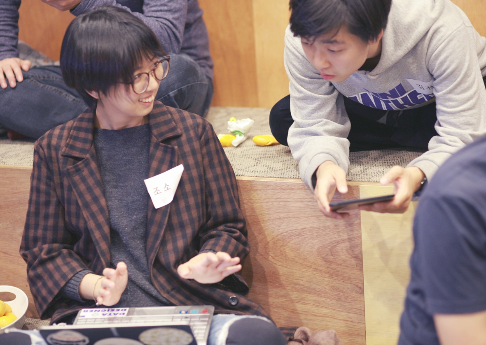
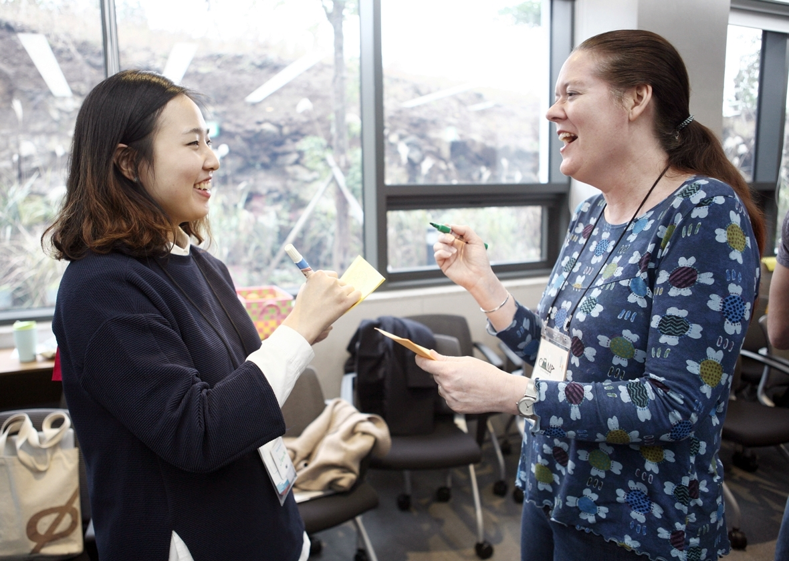
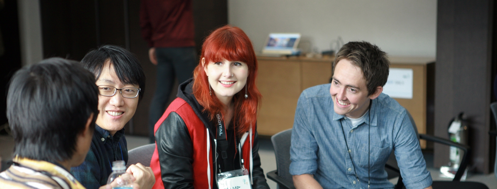

와글이 정치를 하려고 하냐고요? 아닙니다.
와글은 우리 모두가 정치를 하기를 원합니다.
우리가 마주한 문제들을 스스로 해결하려는 시민들의 적극적 참여에
기초해 공론을 만들어가는 일이 더 나은 민주주의를 향한 정치의
본모습이라고 와글은 믿습니다. 정치를 소수가 독점하는 링에서
끌어내려, 아기자기하고 떠들썩한 우리 삶의 장터로 가져오려 합니다.
문제는 ‘어떻게’겠죠.
우리가 일상적으로 사용하는 기술을 활용해 정치혁신과 시민참여,
숙의에 기반한 더 나은 민주주의를 만들 수 있습니다. 일상 기술을
활용하면 정치 혁신과 시민 참여에 관심이 있는 사람뿐 아니라,
정치에 좌절하고 분노하는 누구나 쉽게 참여할 수 있기 때문입니다.
점심 먹다 핸드폰으로 정책 토론을 벌이고 법안을 발의하고,
퇴근 후에 식구들이랑 옹기종기 모여앉아 후보에게 점수를 매기고
새로운 인물을 발굴해 선출하는, 일상화된 정치가 가능해집니다.
이 모든 것은 시민들의 두 엄지손가락으로 해낼 수 있습니다.
와글은 가장 일상적인 기술을 정치와 접목시킴으로써,
일상의 문제는 물론 국가 전체의 이슈를 아우르는 정치참여가
언제 어디서 누구나 가능하다는 것을, 정치가 얼마나 다양한
식재료와 새로운 레시피로 만들 수 있는 요리인지를 보여 드리고자
합니다. 정치는 밥맛 떨어지는 혐오의 대상이 아니라 살맛나는
시민의 잔치가 되어야 한다고 믿으니까요.


 Search
Search


 서울특별시 성동구 왕십리로2길 20, CND빌딩 3층
서울특별시 성동구 왕십리로2길 20, CND빌딩 3층